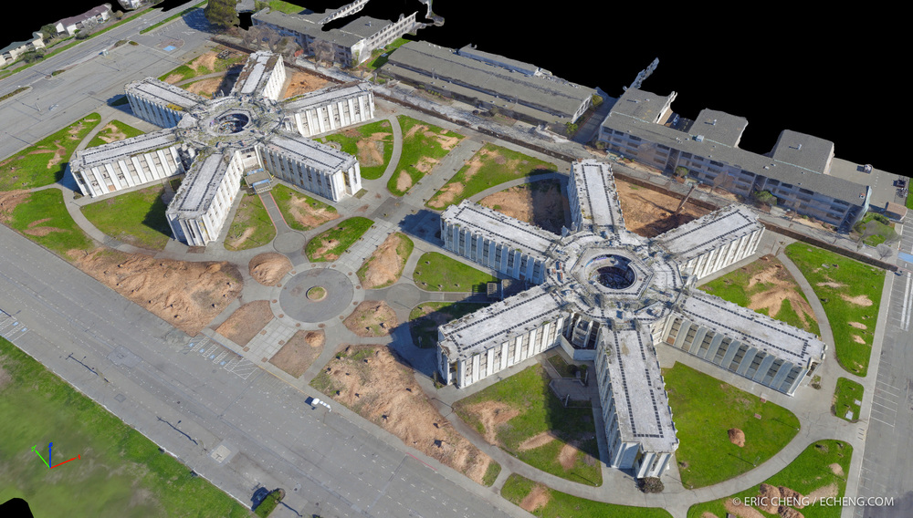

A Monocular SLAM-based Controller for Multirotors with Sensor Faults under Ground Effect.
Sensors 2019, 19(22), 4948. November, 2019.
A. Matus-Vargas, G. Rodriguez-Gomez, J. Martinez-Carranza.
Towards Depth Estimation in a Single Aerial Image”. International Journal of Remote Sensing.
Sensors 2019, 19(22), 4948. November, 2019.
L. Pellegrin and J. Martinez-Carranza.
On the Use of the AIRA-UAS Corpus to Evaluate Audio Processing Algorithms in Unmanned Aerial Systems
Sensors 2019, 19(18), 3902. September, 2019.
C. Rascon, O. Ruiz-Espitia, J. Martinez-Carranza.
Enhancing object, action, and effect recognition using probabilistic affordances
Adaptive Behavior. April, 2019.
E. Jaramillo-Cabrera, E. F. Morales, J. Martinez-Carranza.

High Level 3D Structure Extraction from a Single Image Using a CNN-Based Approach
Sensors 2019, 19, 563. January, 2019.
A. J. Osuna-Coutiño, J. Martinez-Carranza.
Challenges and Implemented Technologies Used in Autonomous Drone Racing
Intelligent Service Robotics. January, 2019.
H. Moon, J. Martinez-Carranza, S. Li, Michael Ozo, C. De Wagter, G. de Croon, D. Falanga, M. Faessler, T. Cieslewski, A. Simovic, D. Scaramuzza, S. Hwang, S. Jung, H. Shim, H. Kim, M. Hyuk Park, Tsz-Chiu Au, Geonuk Lee, Si Jung Kim.
Temporal CNN based Learning for Autonomous Drone Racing
IEEE 5th Workshop on Research, Education and Development of Unmanned Aerial Systems (RED-UAS). IEEE, Cranfield, UK. November, 2019.
L. O. Rojas-Perez, J. Martinez-Carranza.
Sensor Fault Mitigation for MAVs under Ground Effect
IEEE 5th Workshop on Research, Education and Development of Unmanned Aerial Systems (RED-UAS). IEEE, Cranfield, UK. November, 2019.
A. Matus-Vargas, G. Rodriguez-Gomez, J. Martinez-Carranza.
Aerial Geo-Localisation for MAVs using PoseNet
IEEE 5th Workshop on Research, Education and Development of Unmanned Aerial Systems (RED-UAS). IEEE, Cranfield, UK. November, 2019.
A. A. Cabrera-Ponce, J. Martinez-Carranza.
Overcoming the Blind Spot in CNN-based Gate Detection for Autonomous Drone Racing
IEEE 5th Workshop on Research, Education and Development of Unmanned Aerial Systems (RED-UAS). IEEE, Cranfield, UK. November, 2019.
J. Arturo Cocoma-Ortega, L. Oyuki Rojas-Perez, A. A. Cabrera-Ponce, J. Martinez-Carranza.
Towards Aerial Interaction of MAVs in GPS-Denied Environments
IEEE 5th Workshop on Research, Education and Development of Unmanned Aerial Systems (RED-UAS). IEEE, Cranfield, UK. November, 2019.
A. Lopez Luna, J. Martinez Carranza, I. Cruz Vega.
Towards High-Speed Localisation for Autonomous Drone Racing
18th Mexican International Conference on Artificial Intelligence (MICAI). Xalapa, Veracruz, Mexico. November, 2019.
J. A. Cocoma-Ortega, J. Martinez-Carranza.
Depth Estimation using Optical Flow and CNN for the NAO Robot
18th Mexican International Conference on Artificial Intelligence (MICAI). Xalapa, Veracruz, Mexico. November, 2019.
O. Alquisiris-Quecha, J. Martinez-Carranza.
Real-time Monocular Vision-based UAV Obstacle Detection and Collision Avoidance in GPS-denied Outdoor Environments Using CNN MobileNet-SSD
18th Mexican International Conference on Artificial Intelligence (MICAI). Xalapa, Veracruz, Mexico. November, 2019.
D. S. Levkovits-Scherer, I. Cruz-Vega , J. Martinez-Carranza.
Flight Coordination of MAVs in GPS-denied Environments using a Metric Visual SLAM
11th International Micro Air Vehicle Conference (IMAV). Madrid, Spain. October, 2019.
L. Oyuki Rojas-Perez, J. Martinez-Carranza.
Detection of nearby UAVs using CNN and Spectrograms
in 11th international micro air vehicle competition and conference (IMAV), Madrid, Spain, October, 2019.
A. A. Cabrera-Ponce, J. Martinez-Carranza, C. Rascon.
CNN-based Drone Localization Approach for Autonomous Drone Racing
11th International Micro Air Vehicle Conference (IMAV). Madrid, Spain. October, 2019.
J. A. Cocoma-Ortega, J. Martinez-Carranza.
Aerial Interaction Control Using Gain-Scheduling and PID for a Drone with a 2-DOF Arm
in 11th international micro air vehicle competition and conference (IMAV), Madrid, Spain, October, 2019.
A. Lopez-Lopez, J. Martinez-Carranza, I. Cruz.
Towards a rodent tracking and behaviour detection system in real time
Mexican Conference on Pattern Recognition (MCPR) 2019. Queretaro, Mexico. June 2019.
J. A. Cocoma-Ortega, J. Martinez-Carranza.
A Binary descriptor Invariant to Rotation and Robust to Noise (BIRRN) for Floor Recognition
Mexican Conference on Pattern Recognition (MCPR) 2019. Queretaro, Mexico. June 2019.
J. A. J. Osuna-Coutiño, J. Martinez-Carranza.
Aerodynamic Disturbance Rejection Acting on a Quadcopter Near Ground
6th International Conference on Control, Decision and Information Technologies (CODIT) 2019. Paris, France. April 2019.
A. Matus-Vargas, G. Rodriguez-Gomez, J. Martinez-Carranza.
Binary Patterns-Based Floor Recognition Suitable for Urban Scenes
6th International Conference on Control, Decision and Information Technologies (CODIT) 2019. Paris, France. April 2019.
J. A. J. Osuna-Coutiño, J. Martinez-Carranza.